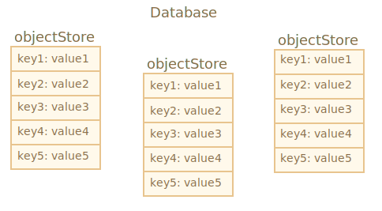
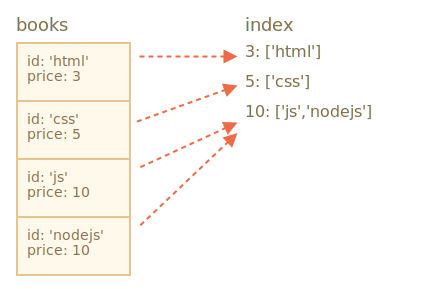

libs:
IndexedDB 是一个浏览器内置的数据库，它比 localStorage 强大得多。
localStorage 相比，它可以存储更大的数据量。对于传统的 客户端-服务器 应用，这些功能通常是没有必要的。IndexedDB 适用于离线应用，可与 ServiceWorkers 和其他技术相结合使用。
根据规范 https://www.w3.org/TR/IndexedDB 中的描述，IndexedDB 的本机接口是基于事件的。
我们还可以在基于 promise 的包装器（wrapper），如 https://github.com/jakearchibald/idb 的帮助下使用 async/await。这要方便的多，但是包装器并不完美，它并不能替代所有情况下的事件。因此，我们先练习事件（events），在理解 IndexedDB 之后，我们将使用包装器。
要想使用 IndexedDB，首先需要 open（连接）一个数据库。
语法：
let openRequest = indexedDB.open(name, version);name —— 字符串，即数据库名称。version —— 一个正整数版本，默认为 1（下面解释）。数据库可以有许多不同的名称，但是必须存在于当前的源（域/协议/端口）中。不同的网站不能相互访问对方的数据库。
调用之后会返回 openRequest 对象，我们需要监听该对象上的事件：
success：数据库准备就绪，openRequest.result 中有了一个数据库对象“Database Object”，使用它进行进一步的调用。error：打开失败。upgradeneeded：数据库已准备就绪，但其版本已过时（见下文）。IndexedDB 具有内建的“模式（scheme）版本控制”机制，这在服务器端数据库中是不存在的。
与服务器端数据库不同，IndexedDB 存在于客户端，数据存储在浏览器中。因此，开发人员无法访问它。因此，当我们发布了新版本的应用程序，用户访问我们的网页，我们可能需要更新该数据库。
如果本地数据库版本低于 open 中指定的版本，会触发一个特殊事件 upgradeneeded。我们可以根据需要比较版本并升级数据结构。
当数据库还不存在时（从技术上讲，该版本为 0），也会触发 upgradeneeded 事件。因此，我们可以执行初始化。
假设我们发布了应用程序的第一个版本。
接下来我们就可以打开版本 1 中的 IndexedDB 数据库，并在 upgradeneeded 处理程序中执行初始化，如下所示：
let openRequest = indexedDB.open("store", *!*1*/!*);
openRequest.onupgradeneeded = function() {
// 如果客户端没有数据库则触发
// ...执行初始化...
};
openRequest.onerror = function() {
console.error("Error", openRequest.error);
};
openRequest.onsuccess = function() {
let db = openRequest.result;
// 继续使用 db 对象处理数据库
};之后不久，我们发布了第二个版本。
我们可以打开版本 2 中的 IndexedDB 数据库，并像这样进行升级：
let openRequest = indexedDB.open("store", *!*2*/!*);
openRequest.onupgradeneeded = function(event) {
// 现有的数据库版本小于 2（或不存在）
let db = openRequest.result;
switch(event.oldVersion) { // 现有的 db 版本
case 0:
// 版本 0 表示客户端没有数据库
// 执行初始化
case 1:
// 客户端版本为 1
// 更新
}
};请注意：虽然我们目前的版本是 2，onupgradeneeded 处理程序有针对版本 0 的代码分支（适用于初次访问，浏览器中没有数据库的用户）和针对版本 1 的代码分支（用于升级）。
接下来，当且仅当 onupgradeneeded 处理程序没有错误地执行完成，openRequest.onsuccess 被触发，数据库才算是成功打开了。
删除数据库：
let deleteRequest = indexedDB.deleteDatabase(name)
// deleteRequest.onsuccess/onerror 追踪（tracks）结果如果当前用户的数据库版本比 `open` 调用的版本更高（比如当前的数据库版本为 `3`，我们却尝试运行 `open(...2)`，就会产生错误并触发 `openRequest.onerror`）。
这有些奇怪，但这样的事情可能会在用户加载了一个过时的 JavaScript 代码时发生（例如用户从一个代理缓存中加载 JS）。在这种情况下，代码是过时的，但数据库却是最新的。
为了防止这样的错误产生，我们应当检查 `db.version` 并建议用户刷新页面。使用正确的 HTTP 缓存头（headers）来防止之前缓存的旧代码被加载。提到版本控制，有一个相关的小问题。
举个例子：
1 的我们的网站。这时，有一个标签页和版本为 1 的数据库建立了一个连接，而另一个标签页试图在其 upgradeneeded 处理程序中将数据库版本升级到 2。
问题是，这两个网页是同一个站点，同一个源，共享同一个数据库。而数据库不能同时为版本 1 和版本 2。要执行版本 2 的更新，必须关闭对版本 1 的所有连接，包括第一个标签页中的那个。
为了解决这一问题，在这种情况下 versionchange 事件会在“过时的”数据库对象上触发。我们需要监听这个事件，关闭对旧版本数据库的连接（还应该建议访问者重新加载页面，以加载最新的代码）。
如果我们不监听 versionchange 事件，也不去关闭旧连接，那么新的连接就不会建立。openRequest 对象会产生 blocked 事件，而不是 success 事件。因此第二个标签页无法正常工作。
下面是能够正确处理并行升级情况的代码。
它在数据库被打开后注入能够关闭旧连接的 onversionchange 处理程序：
let openRequest = indexedDB.open("store", 2);
openRequest.onupgradeneeded = ...;
openRequest.onerror = ...;
openRequest.onsuccess = function() {
let db = openRequest.result;
*!*
db.onversionchange = function() {
db.close();
alert("Database is outdated, please reload the page.")
};
*/!*
// ……数据库已经准备好，请使用它……
};
*!*
openRequest.onblocked = function() {
// 如果我们正确处理了 onversionchange 事件，这个事件就不应该触发
// 这意味着还有另一个指向同一数据库的连接
// 并且在 db.onversionchange 被触发后，该连接没有被关闭
};
*/!*在这我们做两件事：
db.onversionchange 监听器，以得到尝试并行更新的消息。openRequest.onblocked 监听器来处理旧连接未关闭的情况。如果在 db.onversionchange 中关闭，就不会发生这种情况。还有其他方案。例如，我们可以在 db.onversionchange 中优雅地关闭一些东西，关闭连接之前提示用户保存数据。如果 db.onversionchange 完成但没有关闭，新的连接将立即阻塞。可以要求用户只保留新的网页，关闭旧网页，以此更新数据。
这种更新冲突很少发生，但我们至少应该处理一下。例如使用 onblocked 处理程序，以防程序卡死影响用户体验。
要在 IndexedDB 中存储某些内容，我们需要一个对象库。
对象库是 IndexedDB 的核心概念，在其他数据库中对应的对象称为“表”或“集合”。它是储存数据的地方。一个数据库可能有多个存储区：一个用于存储用户数据，另一个用于商品，等等。
尽管被命名为“对象库”，但也可以存储原始类型。
几乎可以存储任何值，包括复杂的对象。
IndexedDB 使用标准序列化算法来克隆和存储对象。类似于 JSON.stringify，不过功能更加强大，能够存储更多的数据类型。
有一种对象不能被存储：循环引用的对象。此类对象不可序列化，也不能进行 JSON.stringify。
库中的每个值都必须有唯一的键 key
键的类型必须为数字、日期、字符串、二进制或数组。它是唯一的标识符：通过键来 搜索/删除/更新 值。

类似于 localStorage，我们向存储区添加值时，可以提供一个键。但当我们存储对象时，IndexedDB 允许设置一个对象属性作为键，这就更加方便了。或者，我们可以自动生成键。
但我们需要先创建一个对象库。
创建对象库的语法：
db.createObjectStore(name[, keyOptions]);请注意，操作是同步的，不需要 await。
name 是存储区名称，例如 "books" 表示书。keyOptions 是具有以下两个属性之一的可选对象：keyPath —— 对象属性的路径，IndexedDB 将以此路径作为键，例如 id。autoIncrement —— 如果为 true，则自动生成新存储的对象的键，键是一个不断递增的数字。如果我们不提供 keyOptions，那么以后需要在存储对象时，显式地提供一个键。
例如，此对象库使用 id 属性作为键:
db.createObjectStore('books', {keyPath: 'id'});在 upgradeneeded 处理程序中，只有在创建数据库版本时，对象库被才能被 创建/修改。
这是技术上的限制。在 upgradeneedHandler 之外，可以 添加/删除/更新数据，但是只能在版本更新期间 创建/删除/更改对象库。
要执行数据库版本升级，主要有两种方法：
upgradeneeded 中，可以进行版本比较（例如，老版本是 2，需要升级到 4），并针对每个中间版本（2 到 3，然后 3 到 4）逐步运行每个版本的升级。db.objectStoreNames 的形式获取现有对象库的列表。该对象是一个 DOMStringList 提供 contains(name) 方法来检查 name 是否存在，再根据存在和不存在的内容进行更新。对于小型数据库，第二种方法可能更简单。
下面是第二种方法的演示:
let openRequest = indexedDB.open("db", 2);
// 创建/升级 数据库而无需版本检查
openRequest.onupgradeneeded = function() {
let db = openRequest.result;
if (!db.objectStoreNames.contains('books')) { // 如果没有 “books” 数据
db.createObjectStore('books', {keyPath: 'id'}); // 创造它
}
};删除对象库：
db.deleteObjectStore('books')术语“事务”是通用的，许多数据库中都有用到。
事务是一组操作，要么全部成功，要么全部失败。
例如，当一个人买东西时，我们需要：
如果完成了第一个操作，但是出了问题，比如停电。这时无法完成第二个操作，这非常糟糕。两件时应该要么都成功（购买完成，好！）或同时失败（这个人保留了钱，可以重新尝试）。
事务可以保证同时完成。
所有数据操作都必须在 IndexedDB 中的事务内进行。
启动事务：
db.transaction(store[, type]);store 是事务要访问的库名称，例如 "books"。如果我们要访问多个库，则是库名称的数组。type – 事务类型，以下类型之一：readonly —— 只读，默认值。readwrite —— 只能读取和写入数据，而不能 创建/删除/更改 对象库。还有 versionchange 事务类型：这种事务可以做任何事情，但不能被手动创建。IndexedDB 在打开数据库时，会自动为 updateneeded 处理程序创建 versionchange 事务。这就是它为什么可以更新数据库结构、创建/删除 对象库的原因。
性能是事务需要标记为 `只读（readonly）` 和 `读写（readwrite）` 的原因。
许多只读事务能够同时访问同一存储区，但读写事务不能。因为读写事务会“锁定”存储区进行写操作。下一个事务必须等待前一个事务完成，才能访问相同的存储区。创建事务后，我们可以将项目添加到库，就像这样：
let transaction = db.transaction("books", "readwrite"); // (1)
// 获取对象库进行操作
*!*
let books = transaction.objectStore("books"); // (2)
*/!*
let book = {
id: 'js',
price: 10,
created: new Date()
};
*!*
let request = books.add(book); // (3)
*/!*
request.onsuccess = function() { // (4)
// 书已添加到存储区
console.log("Book added to the store", request.result);
};
request.onerror = function() {
console.log("Error", request.error);
};基本有四个步骤：
transaction.objectStore(name)，在（2）中获取存储对象。books.add(book) 的请求。对象库支持两种存储值的方法：
put(value, [key])
将 value 添加到存储区。仅当对象库没有 keyPath 或 autoIncrement 时，才提供 key。如果已经存在具有相同键的值，则将替换该值。
add(value, [key])
与 put 相同，但是如果已经有一个值具有相同的键，则请求失败，并生成一个名为 "ConstraInterror" 的错误。
与打开数据库类似，我们可以发送一个请求：books.add(book)，然后等待 success/error 事件。
add 的 request.result 是新对象的键。request.error（如果有的话）中。在上面的示例中，我们启动了事务并发出了 add 请求。但正如前面提到的，一个事务可能有多个相关的请求，这些请求必须全部成功或全部失败。那么如何标记事务为已完成，并不再请求呢？
简短的回答是：没有。
在下一个版本 3.0 规范中，可能会有一种手动方式来完成事务，但目前在 2.0 中还没有。
当所有事务的请求完成，并且 微任务队列 为空时，它将自动提交。
通常，我们可以假设事务在其所有请求完成时提交，并且当前代码完成。
因此，在上面的示例中，不需要任何特殊调用即可完成事务。
事务自动提交原则有一个重要的副作用。不能在事务中间插入 fetch, setTimeout 等异步操作。IndexedDB 不会让事务等待这些操作完成。
在下面的代码中，request2 中的行 (*) 失败，因为事务已经提交，不能在其中发出任何请求:
let request1 = books.add(book);
request1.onsuccess = function() {
fetch('/').then(response => {
*!*
let request2 = books.add(anotherBook); // (*)
*/!*
request2.onerror = function() {
console.log(request2.error.name); // TransactionInactiveError
};
});
};这是因为 fetch 是一个异步操作，一个宏任务。事务在浏览器开始执行宏任务之前关闭。
IndexedDB 规范的作者认为事务应该是短期的。主要是性能原因。
值得注意的是，readwrite 事务将存储“锁定”以进行写入。因此，如果应用程序的一部分启动了 books 对象库上的 readwrite 操作，那么希望执行相同操作的另一部分必须等待新事务“挂起”，直到第一个事务完成。如果事务处理需要很长时间，将会导致奇怪的延迟。
那么，该怎么办？
在上面的示例中，我们可以在新请求 (*) 之前创建一个新的 db.transaction。
如果需要在一个事务中把所有操作保持一致，更好的做法是将 IndexedDB 事务和“其他”异步内容分开。
首先，执行 fetch，并根据需要准备数据。然后创建事务并执行所有数据库请求，然后就正常了。
为了检测到成功完成的时刻，我们可以监听 transaction.oncomplete 事件:
let transaction = db.transaction("books", "readwrite");
// ……执行操作……
transaction.oncomplete = function() {
console.log("Transaction is complete"); // 事务执行完成
};只有 complete 才能保证将事务作为一个整体保存。个别请求可能会成功，但最终的写入操作可能会出错（例如 I/O 错误或其他错误）。
要手动中止事务，请调用：
transaction.abort();取消请求里所做的所有修改，并触发 transaction.onabort 事件。
写入请求可能会失败。
这是意料之中的事，不仅是我们可能会犯的粗心失误，还有与事务本身相关的其他原因。例如超过了存储配额。因此，必须做好请求失败的处理。
失败的请求将自动中止事务，并取消所有的更改。
在一些情况下，我们会想自己去处理失败事务（例如尝试另一个请求）并让它继续执行，而不是取消现有的更改。可以调用 request.onerror 处理程序，在其中调用 event.preventDefault() 防止事务中止。
在下面的示例中，添加了一本新书，键 (id) 与现有的书相同。store.add 方法生成一个 "ConstraInterror"。可以在不取消事务的情况下进行处理：
let transaction = db.transaction("books", "readwrite");
let book = { id: 'js', price: 10 };
let request = transaction.objectStore("books").add(book);
request.onerror = function(event) {
// 有相同 id 的对象存在时，发生 ConstraintError
if (request.error.name == "ConstraintError") {
console.log("Book with such id already exists"); // 处理错误
event.preventDefault(); // 不要中止事务
// 这个 book 用另一个键？
} else {
// 意外错误，无法处理
// 事务将中止
}
};
transaction.onabort = function() {
console.log("Error", transaction.error);
};每个请求都需要调用 onerror/onsuccess ？并不，可以使用事件委托来代替。
IndexedDB 事件冒泡：请求 -> 事务 -> 数据库。
所有事件都是 DOM 事件，有捕获和冒泡，但通常只使用冒泡阶段。
因此，出于报告或其他原因，我们可以使用 db.onerror 处理程序捕获所有错误：
db.onerror = function(event) {
let request = event.target; // 导致错误的请求
console.log("Error", request.error);
};……但是错误被完全处理了呢？这种情况不应该被报告。
我们可以通过在 request.onerror 中使用 event.stopPropagation() 来停止冒泡，从而停止 db.onerror 事件。
request.onerror = function(event) {
if (request.error.name == "ConstraintError") {
console.log("Book with such id already exists"); // 处理错误
event.preventDefault(); // 不要中止事务
event.stopPropagation(); // 不要让错误冒泡, 停止它的传播
} else {
// 什么都不做
// 事务将中止
// 我们可以解决 transaction.onabort 中的错误
}
};对象库有两种主要的搜索类型：
book.id。book.price。首先，让我们来处理键和键范围 (1)。
涉及到的搜索方法，包括支持精确键，也包括所谓的“范围查询” —— IDBKeyRange 对象指定一个“键范围”。
使用以下调用函数创建范围：
IDBKeyRange.lowerBound(lower, [open]) 表示：≥lower（如果 open 是 true，表示 >lower）IDBKeyRange.upperBound(upper, [open]) 表示：≤upper（如果 open 是 true，表示 <upper）IDBKeyRange.bound(lower, upper, [lowerOpen], [upperOpen]) 表示: 在 lower 和 upper 之间。如果 open 为 true，则相应的键不包括在范围中。IDBKeyRange.only(key) —— 仅包含一个键的范围 key，很少使用。所有搜索方法都接受一个查询参数 query，该参数可以是精确键或者键范围：
store.get(query) —— 按键或范围搜索第一个值。store.getAll([query], [count]) —— 搜索所有值。如果 count 给定，则按 count 进行限制。store.getKey(query) —— 搜索满足查询的第一个键，通常是一个范围。store.getAllKeys([query], [count]) —— 搜索满足查询的所有键，通常是一个范围。如果 count 给定，则最多为 count。store.count([query]) —— 获取满足查询的键的总数，通常是一个范围。例如，我们存储区里有很多书。因为 id 字段是键，因此所有方法都可以按 id 进行搜索。
请求示例：
// 获取一本书
books.get('js')
// 获取 'css' <= id <= 'html' 的书
books.getAll(IDBKeyRange.bound('css', 'html'))
// 获取 id < 'html' 的书
books.getAll(IDBKeyRange.upperBound('html', true))
// 获取所有书
books.getAll()
// 获取所有 id > 'js' 的键
books.getAllKeys(IDBKeyRange.lowerBound('js', true))对象库按键对值进行内部排序。
因此，请求的返回值，是按照键的顺序排列的。要根据其他对象字段进行搜索，我们需要创建一个名为“索引（index）”的附加数据结构。
索引是存储的"附加项"，用于跟踪给定的对象字段。对于该字段的每个值，它存储有该值的对象的键列表。下面会有更详细的图片。
语法：
objectStore.createIndex(name, keyPath, [options]);name —— 索引名称。keyPath —— 索引应该跟踪的对象字段的路径（我们将根据该字段进行搜索）。option —— 具有以下属性的可选对象：unique —— 如果为true，则存储中只有一个对象在 keyPath 上具有给定值。如果我们尝试添加重复项，索引将生成错误。multiEntry —— 只有 keypath 上的值是数组才时使用。这时，默认情况下，索引将默认把整个数组视为键。但是如果 multiEntry 为 true，那么索引将为该数组中的每个值保留一个存储对象的列表。所以数组成员成为了索引键。在我们的示例中，是按照 id 键存储图书的。
假设我们想通过 price 进行搜索。
首先，我们需要创建一个索引。它像对象库一样，必须在 upgradeneeded 中创建完成：
openRequest.onupgradeneeded = function() {
// 在 versionchange 事务中，我们必须在这里创建索引
let books = db.createObjectStore('books', {keyPath: 'id'});
*!*
let index = inventory.createIndex('price_idx', 'price');
*/!*
};price 字段。unique 选项。multiEntry 标志。假设我们的库存里有4本书。下面的图片显示了该索引 index 的确切内容：

如上所述，每个 price 值的索引（第二个参数）保存具有该价格的键的列表。
索引自动保持最新，所以我们不必关心它。
现在，当我们想要搜索给定的价格时，只需将相同的搜索方法应用于索引：
let transaction = db.transaction("books"); // 只读
let books = transaction.objectStore("books");
let priceIndex = books.index("price_idx");
*!*
let request = priceIndex.getAll(10);
*/!*
request.onsuccess = function() {
if (request.result !== undefined) {
console.log("Books", request.result); // 价格为 10 的书的数组
} else {
console.log("No such books");
}
};我们还可以使用 IDBKeyRange 创建范围，并查找 便宜/贵 的书：
// 查找价格 <=5 的书籍
let request = priceIndex.getAll(IDBKeyRange.upperBound(5));在我们的例子中，索引是按照被跟踪对象字段价格 price 进行内部排序的。所以当我们进行搜索时，搜索结果也会按照价格排序。
delete 方法查找要由查询删除的值，调用格式类似于 getAll
delete(query) —— 通过查询删除匹配的值。例如：
// 删除 id='js' 的书
books.delete('js');如果要基于价格或其他对象字段删除书。首先需要在索引中找到键，然后调用 delete：
// 找到价格 = 5 的钥匙
let request = priceIndex.getKey(5);
request.onsuccess = function() {
let id = request.result;
let deleteRequest = books.delete(id);
};删除所有内容：
books.clear(); // 清除存储。像 getAll/getAllKeys 这样的方法，会返回一个 键/值 数组。
但是一个对象库可能很大，比可用的内存还大。这时，getAll 就无法将所有记录作为一个数组获取。
该怎么办呢？
光标提供了解决这一问题的方法。
光标是一种特殊的对象，它在给定查询的情况下遍历对象库，一次返回一个键/值，从而节省内存。
由于对象库是按键在内部排序的，因此光标按键顺序（默认为升序）遍历存储。
语法:
// 类似于 getAll，但带有光标：
let request = store.openCursor(query, [direction]);
// 获取键，而不是值（例如 getAllKeys）：store.openKeyCursor query 是一个键或键范围，与 getAll 相同。direction 是一个可选参数，使用顺序是："next" —— 默认值，光标从有最小索引的记录向上移动。"prev" —— 相反的顺序：从有最大的索引的记录开始下降。"nextunique"，"prevunique" —— 同上，但是跳过键相同的记录 （仅适用于索引上的光标，例如，对于价格为 5 的书，仅返回第一本）。光标对象的主要区别在于 request.onSuccess 多次触发：每个结果触发一次。
这有一个如何使用光标的例子：
let transaction = db.transaction("books");
let books = transaction.objectStore("books");
let request = books.openCursor();
// 为光标找到的每本书调用
request.onsuccess = function() {
let cursor = request.result;
if (cursor) {
let key = cursor.key; // 书的键（id字段）
let value = cursor.value; // 书本对象
console.log(key, value);
cursor.continue();
} else {
console.log("No more books");
}
};主要的光标方法有：
advance(count) —— 将光标向前移动 count 次，跳过值。continue([key]) —— 将光标移至匹配范围中的下一个值（如果给定键，紧接键之后）。无论是否有更多的值匹配光标 —— 调用 onsuccess。结果中，我们可以获得指向下一条记录的光标，或者 undefined。
在上面的示例中，光标是为对象库创建的。
也可以在索引上创建一个光标。索引是允许按对象字段进行搜索的。在索引上的光标与在对象存储上的光标完全相同 — 它们通过一次返回一个值来节省内存。
对于索引上的游标，cursor.key 是索引键（例如：价格），我们应该使用 cursor.primaryKey 属性作为对象的键：
let request = priceIdx.openCursor(IDBKeyRange.upperBound(5));
// 为每条记录调用
request.onsuccess = function() {
let cursor = request.result;
if (cursor) {
let key = cursor.primaryKey; // 下一个对象存储键（id 字段）
let value = cursor.value; // 下一个对象存储对象（book 对象）
let key = cursor.key; // 下一个索引键（price）
console.log(key, value);
cursor.continue();
} else {
console.log("No more books"); // 没有书了
}
};将 onsuccess/onerror 添加到每个请求是一项相当麻烦的任务。我们可以通过使用事件委托（例如，在整个事务上设置处理程序）来简化我们的工作，但是 async/await 要方便的多。
在本章，我们会进一步使用一个轻便的承诺包装器 https://github.com/jakearchibald/idb 。它使用 promisified IndexedDB 方法创建全局 idb 对象。
然后，我们可以不使用 onsuccess/onerror，而是这样写：
let db = await idb.openDb('store', 1, db => {
if (db.oldVersion == 0) {
// 执行初始化
db.createObjectStore('books', {keyPath: 'id'});
}
});
let transaction = db.transaction('books', 'readwrite');
let books = transaction.objectStore('books');
try {
await books.add(...);
await books.add(...);
await transaction.complete;
console.log('jsbook saved');
} catch(err) {
console.log('error', err.message);
}
现在我们有了可爱的“简单异步代码”和「try..catch」捕获的东西。
如果我们没有捕获到错误，那么程序将一直失败，直到外部最近的 try..catch 捕获到为止。
未捕获的错误将成为 window 对象上的“unhandled promise rejection”事件。
我们可以这样处理这种错误：
window.addEventListener('unhandledrejection', event => {
let request = event.target; // IndexedDB 本机请求对象
let error = event.reason; // 未处理的错误对象，与 request.error 相同
// ……报告错误……
});我们都知道，浏览器一旦执行完成当前的代码和微任务之后，事务就会自动提交。因此，如果我们在事务中间放置一个类似 fetch 的宏任务，事务只是会自动提交，而不会等待它执行完成。因此，下一个请求会失败。
对于 promise 包装器和 async/await，情况是相同的。
这是在事务中间进行 fetch 的示例：
let transaction = db.transaction("inventory", "readwrite");
let inventory = transaction.objectStore("inventory");
await inventory.add({ id: 'js', price: 10, created: new Date() });
await fetch(...); // (*)
await inventory.add({ id: 'js', price: 10, created: new Date() }); // 错误fetch (*) 后的下一个 inventory.add 失败，出现“非活动事务”错误，因为这时事务已经被提交并且关闭了。
解决方法与使用本机 IndexedDB 时相同：进行新事务，或者将事情分开。
在内部，包装器执行本机 IndexedDB 请求，并添加 onerror/onsuccess 方法，并返回 rejects/resolves 结果的 promise。
在大多数情况下都可以运行， 示例在这 https://github.com/jakearchibald/idb。
极少数情况下，我们需要原始的 request 对象。可以将 promise 的 promise.request 属性，当作原始对象进行访问：
let promise = books.add(book); // 获取 promise 对象(不要 await 结果)
let request = promise.request; // 本地请求对象
let transaction = request.transaction; // 本地事务对象
// ……做些本地的 IndexedDB 的处理……
let result = await promise; // 如果仍然需要IndexedDB 可以被认为是“localStorage on steroids”。这是一个简单的键值对数据库，功能强大到足以支持离线应用，而且用起来比较简单。
最好的指南是官方文档。目前的版本是2.0，但是3.0版本中的一些方法（差别不大）也得到部分支持。
基本用法可以用几个短语来描述：
idb.openDb(name, version, onupgradeneeded)onupgradeneeded 处理程序中创建对象存储和索引，或者根据需要执行版本更新。db.transaction('books')（如果需要的话，设置 readwrite）。transaction.objectStore('books')。这里有一个小应用程序示例：
[codetabs src="books" current="index.html"]